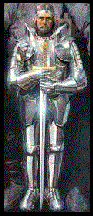
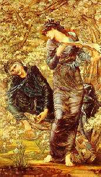
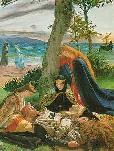
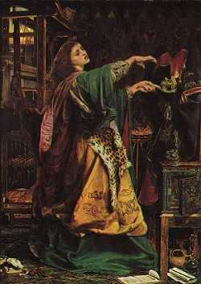
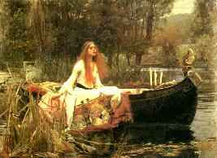
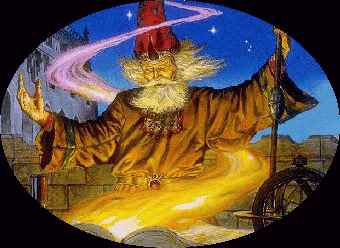
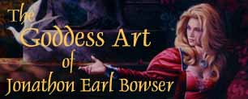

|
Historical Background

The earliest reference to a historic Arthur - the name is Roman - is contained in a Welsh poem of c. 600, which states that another named warrior was 'no Arthur'. An early 7th-century text lists 12 battles that Arthur is supposed to have won as leader of the native British. In the 10th-century Annales Cambriae, two of these battles are assigned dates in the first half of the 6th-century. The earliest evidence of the development of the idea of a legendary British champion on which subsequent stories were constructed is found in the early 9th-century history attributed to Nennius. There have been interesting excavations designed to discover Arthur's court. Ultimately, the only thing that can be said of the historic Arthur is that there may have existed a great soldier who temporarily halted Anglo-Saxon assault, but it is doubtful whether he was able to unite the British against the invaders. The graphic shows Arthur with his legendary sword Excalibur

In subsequent history there are two very different legendary King Arthurs. One is the warrior champion who led Britons in numerous battles against the invading Saxons - a distinctly Celtic hero. The other presided over a magnificent court, Camelot, and his deeds tended to be overshone by those of his followers, the Knights of the Round Table. This Arthur is the ideal king, a model for any monarch of Britain, not necessarily one who was a Briton or a Celt. Any king who claimed lordship over the British Isles would be perfectly happy to look upon him as his predecessor.
By the early 12th-century, Arthur's story was clearly well known in Wales, Cornwall and Brittany, and one of its salient features was already established: the oppressed Britons dreamed of the day when King Arthur (like Cynan and Cadwaladr before him) would return and restore to his people their rightful dominion over the island of Briton.
On the one hand, this provided a courtly setting for the Arthurian romances of authors from Chrétien de Troyes onwards. On the other hand, it made it easier to overlook the specifically Celtic Arthur. The politically inspired 'discovery' of Arthur's body at Glastonbury still bearing terrible wounds, in c. 1190 may also have helped to push into the background the image of a king being healed at Avalon so that he might return and drive out the English.

This cleared the way for the reconstruction of Arthur as an English king, a process that was aided by the habit, common already in the 12th-century, of treating 'Britain' and 'England' as virtually interchangeable terms. Thus it seems that the earliest king of England to identify himself with King Arthur was Richard I, a ruler who set off on crusade brandishing Excalibur; by the 14th-century, Edward III was described as 'unmatched since the days of Arthur, onetime king of England'.
Through Sir Thomas Malory, the cult of King Arthur survived into modern times, to be taken up and reworked in an extraordinary multiplicity of ways. Doubtless the Welsh blood of the Tudors allowed Edmund Spenser to tell Elizabeth I that her name, realm and race were all derived from 'this renowned prince'. But without any such association, Sir Richard Blackmore could make his Arthur represent William of Orange (the future William III), while Alfred Tennyson could equally well imagine Albert, Victoria's Prince Consort, finding in King Arthur 'some image of himself'. As for the British champion who would return to liberate his oppressed people, the Welsh found in Owain Glyn Dwr some compensation for the loss of their Arthur to the international world of Art and Letters.

Morgan Le Fay (Morgana)was the daughter of Igraine and Gorlois, and therefore the half-sister of King Arthur. She is often portrayed as his mortal enemy because Arthur's father, Uther,killed her own father in battle over her mother. She is requently shown as conspiring against Arthur. Morgan Le Fay seduced Arthur in his youth. The product of their liaison was Mordred - the son who would eventually destroy his father, Arthur.
The Estoire de Merlin describes Morgan Le Fay thus:
'She was sister of King Arthur, very gay and playful; she sang agreeably; though dark in the face, very well made, neither too fat nor too thin, with beautiful hands, perfect shoulders, skin softer than silk, engaging of manner, long and straight in the body; wonderfully seductive and, besides all that, the armest and most sensual woman in all Britain.
Merlin had taught her astronomy and many other things, and she studied them so well that she became an excellent scholar and was later called Morgan Le Fee because of the marvels she wrought. She expressed herself with gentleness and delightful sweetness, and was more good natured and attractive than anyone else in the world, when she was calm. But when her anger was roused against someone, she was very difficult to appease.'

This was the figure of Celtic legend whom Geoffrey of Monmouth transformed in the 1130s into the dominating personality of his historical fantasy, the History of the Kings of Britain. In Geoffrey's hands, Arthur remained the British champion, but he also became much more. A conqueror of Scotland, Ireland, Iceland, Norway, Denmark and Gaul, he was the equal of Alexander and Charlemagne, and his court was a spectacular centre of international CHIVALRY, love, courtliness and high fashion. When Geoffrey was translated into Anglo-Norman by Wace, these new elements rapidly became more prominent.
|  |
|
|  |